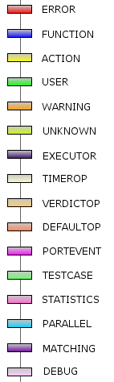

The user can specify which event types that will be filtered out
when displaying the message sequence chart.
The filtering will only be performed on silent events. If the event class are
present in the file is determined by the TITAN logging setting.
The following table shows event types that can be filtered. The
main categories applies to all log formats, while the subcategories only applies
to the log format provided by the TITAN R7B and R7C releases.
If one or more of the subcategories are checked, then the main category will be filtered in older log formats.
|
Button |
Description |
|
Select All |
Selects all event types. |
|
Deselect All |
Unchecks all the event types. |
|
Restore Defaults |
Restores the settings to default. Default setting is all event types unchecked. |
Silent events have the following color mapping:
